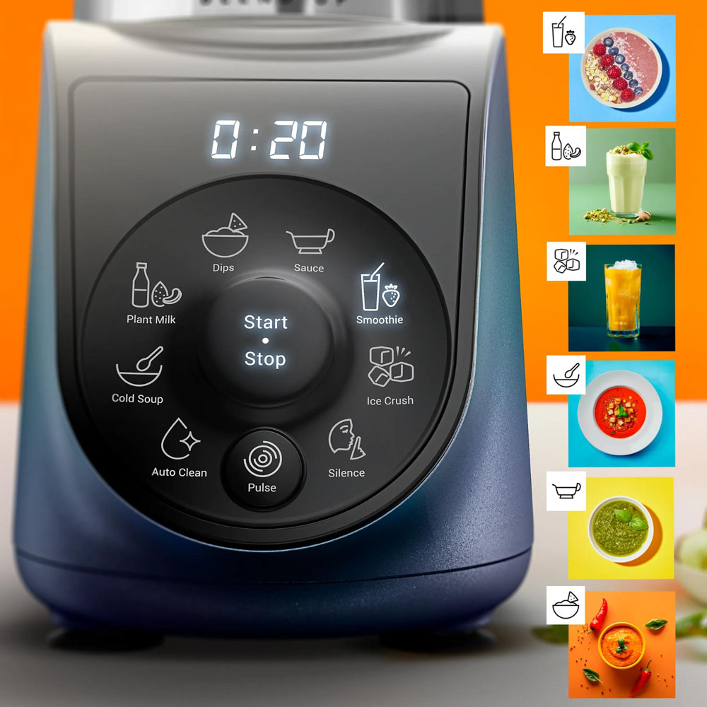
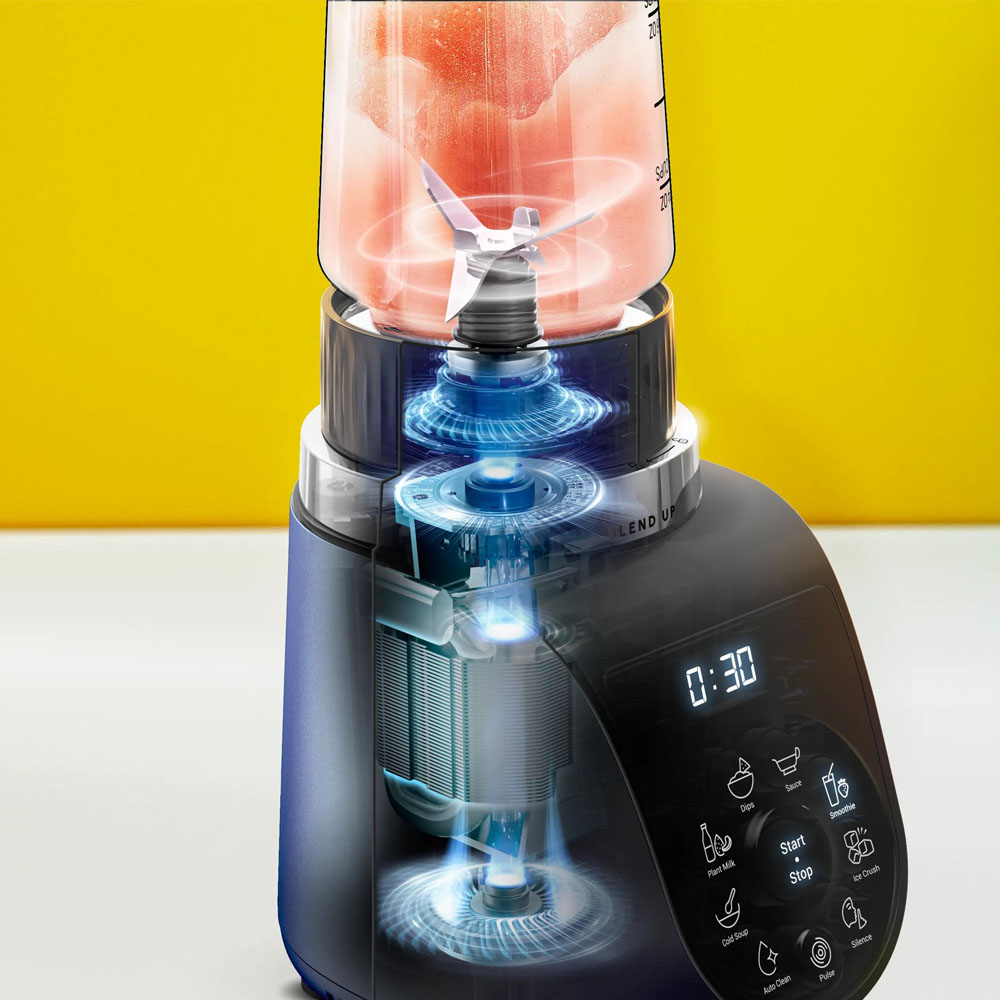
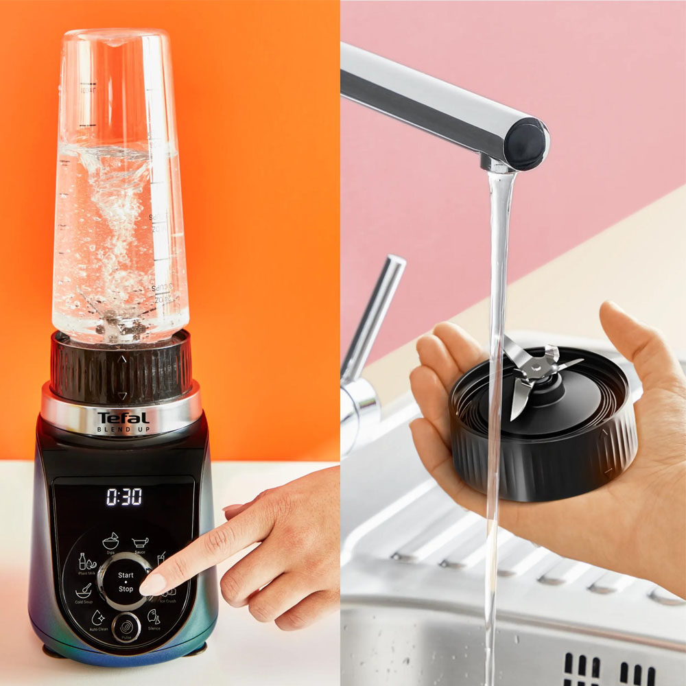
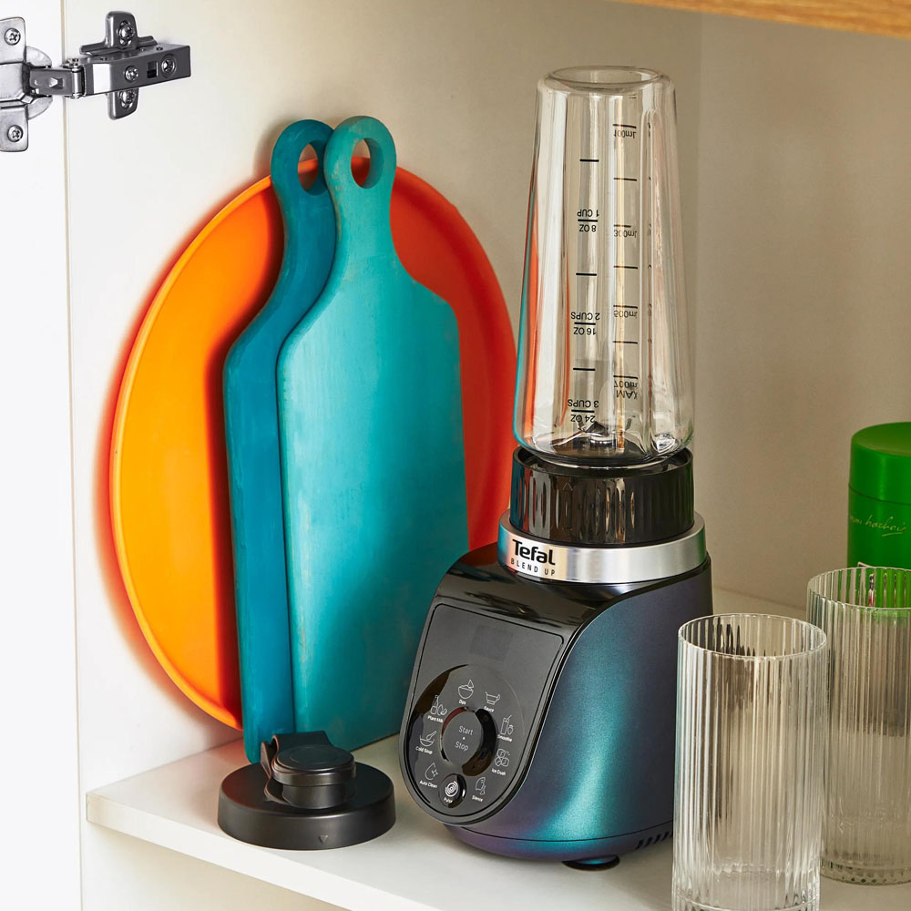
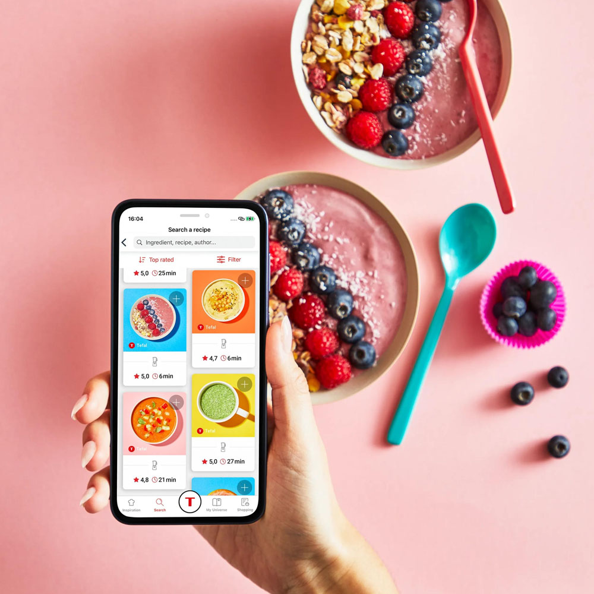
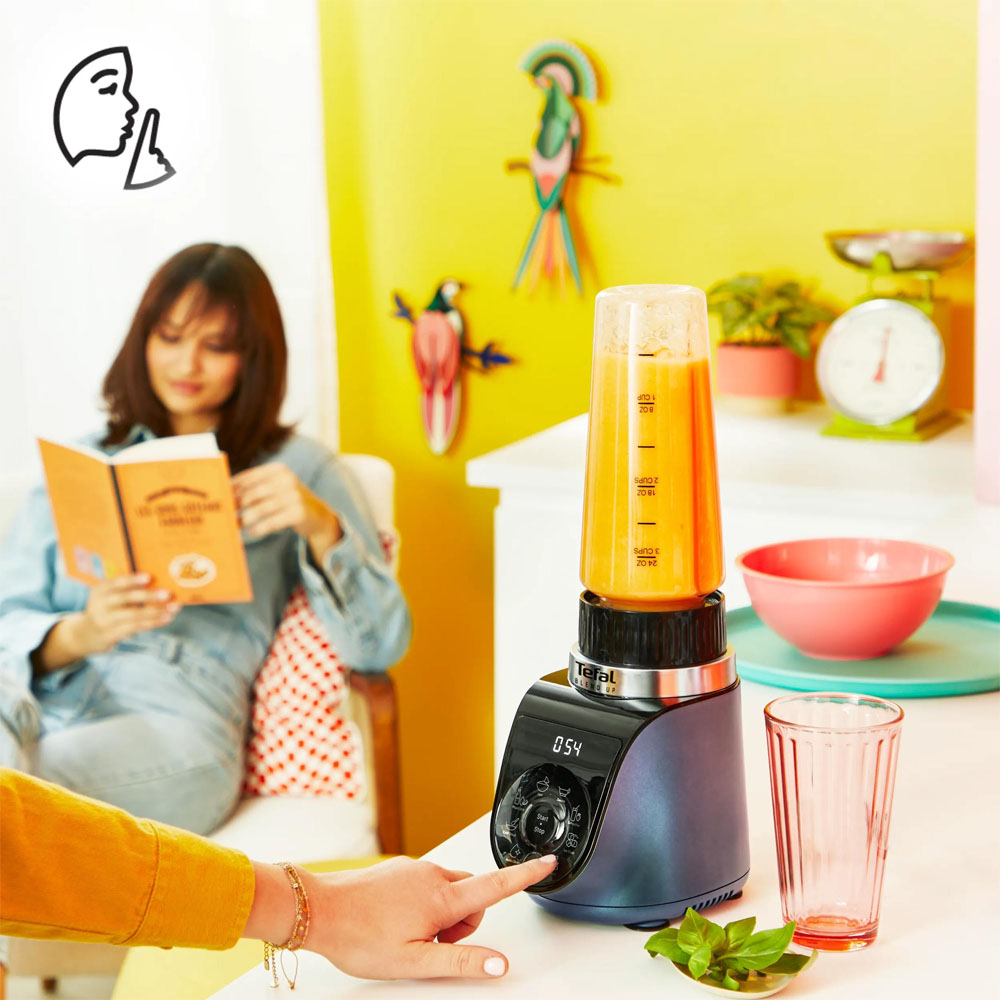
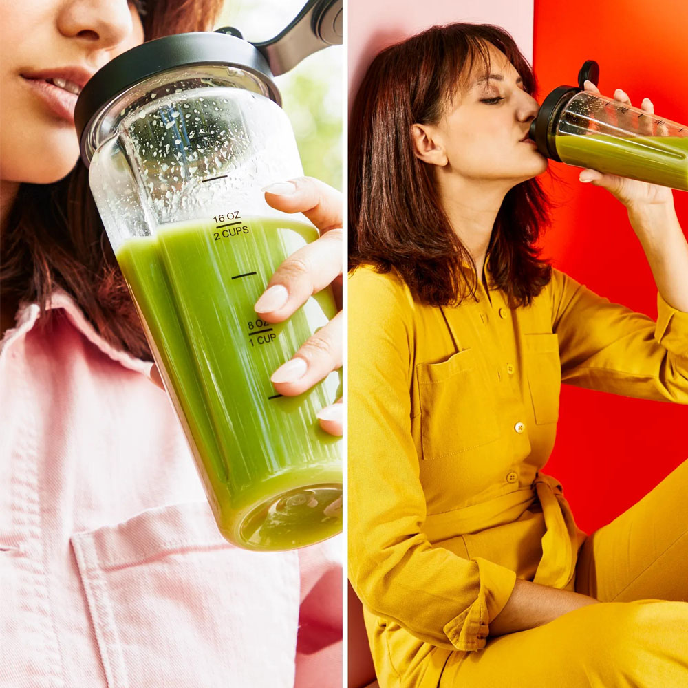
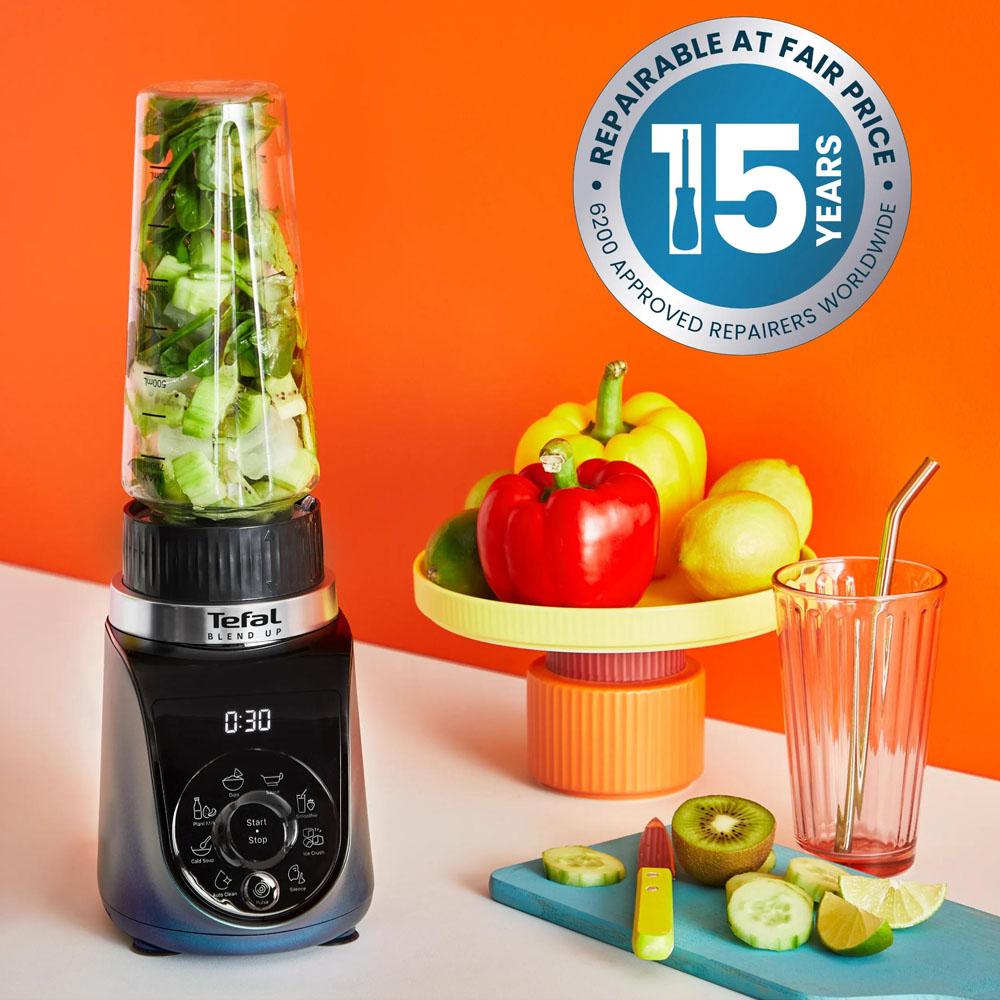

ÇOK YÖNLÜ
8 otomatik program sayesinde smoothie'ler ve bitki bazlı içeceklerden garnitürlere, soslara ve daha fazlasına kadar tüm karışımlar için optimum hız ve karıştırma süresi sağlar.

8 otomatik program sayesinde smoothie'ler ve bitki bazlı içeceklerden garnitürlere, soslara ve daha fazlasına kadar tüm karışımlar için optimum hız ve karıştırma süresi sağlar.

Blenderin 1000 W motoru ve Powelix bıçakları, küçük ancak sağlam bir tasarımda olağanüstü performans sunar.

Otomatik temizleme modu, çıkarılabilir bıçaklar, bulaşık makinesinde yıkanabilir şişeler ve yıkama fırçası sayesinde uzun ve meşakkatli temizlik işlerini unutun.

Alan değerlidir—bir santimini bile boşa harcamayın! Blend Up, hafif ve kompakt tasarım her yere kolaylıkla sığabilir. Küçük daireler için idealdir.

Tefal uygulamasında bulunan ruh halinize uygun 100'den fazla adım adım tarif sayesinde fikirleriniz asla bitmesin.* *Tefal uygulamasının kullanılmadığı ülkeler için, 40 tarif içeren dijital tarif kitabı mevcuttur.

Etrafınızdakileri rahatsız etmek istemiyor musunuz? Bir mutfak programı seçmenize gerek kalmadan, sadece 2 kata kadar daha sessiz (maksimum hıza kıyasla) sessizlik modunu seçin.

Birinci sınıf BPA içermeyen Tritan'dan yapılmış iki sızdırmaz pratik şişe içerisinde doğrudan karıştırın ve sonra nereye giderseniz gidin içeceğinizi yanınızda götürün!

Dünya çapında 6200'den fazla onarım merkezi sayesinde 15 yıl ve daha uzun süre düşük maliyetli ve hızlı yedek parça teslimatı ile kolayca onarılmak üzere tasarlanmıştır.